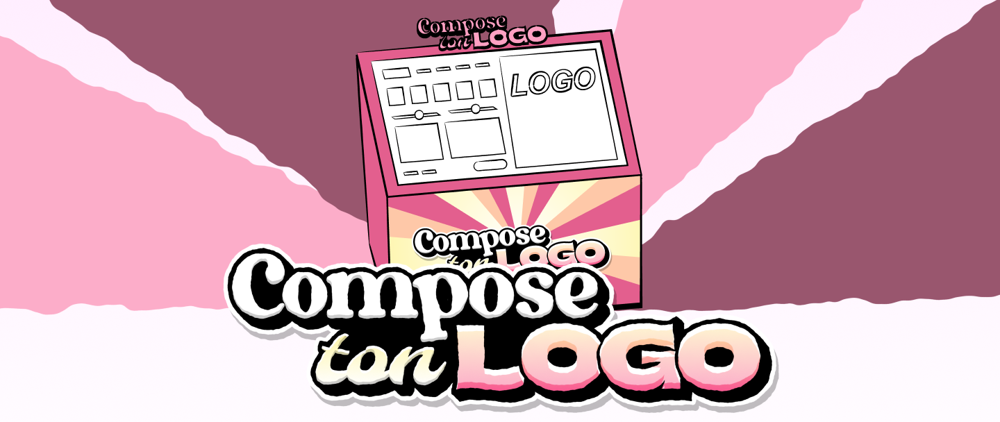
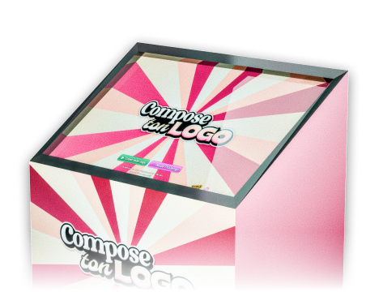
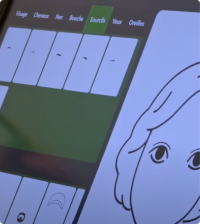
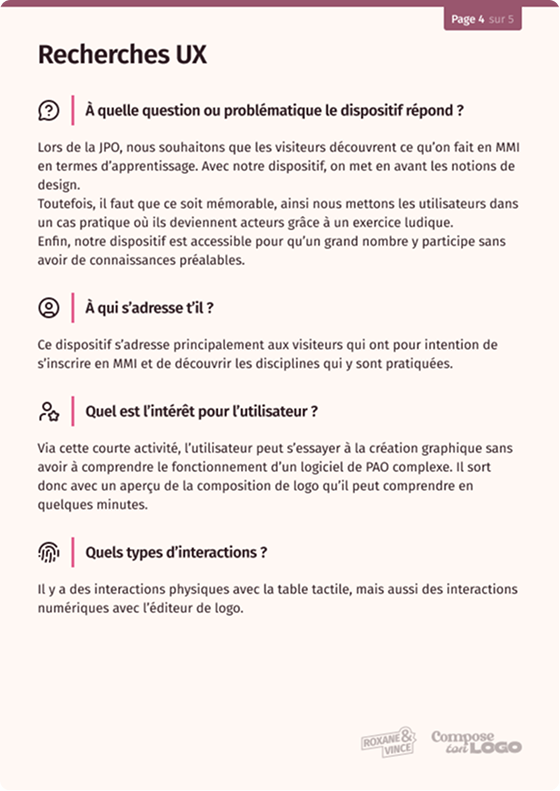
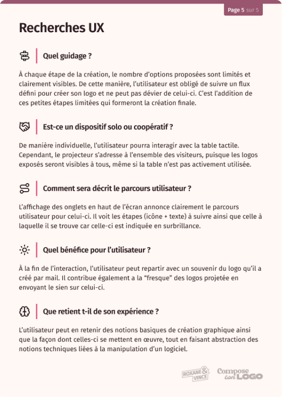
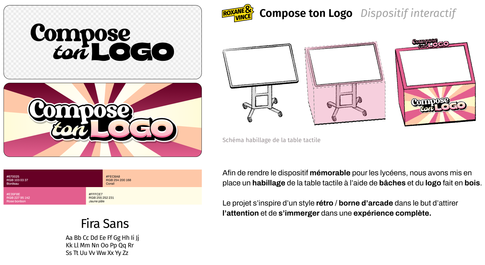
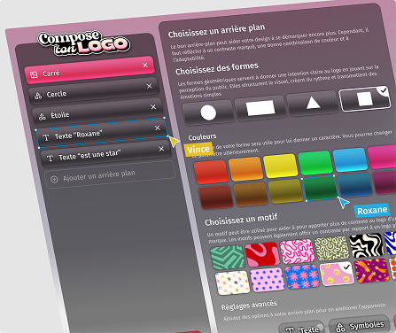
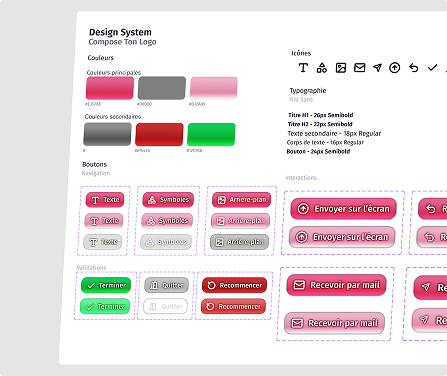
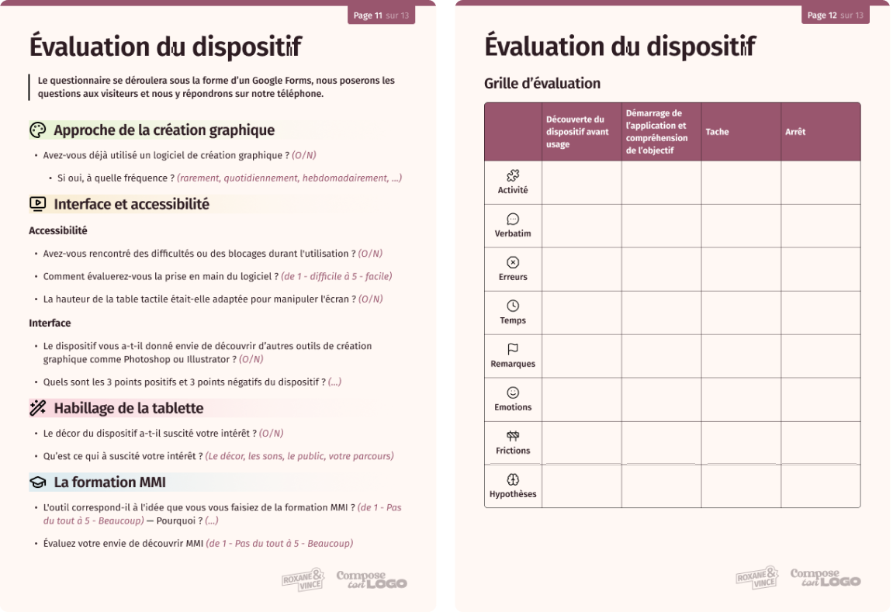
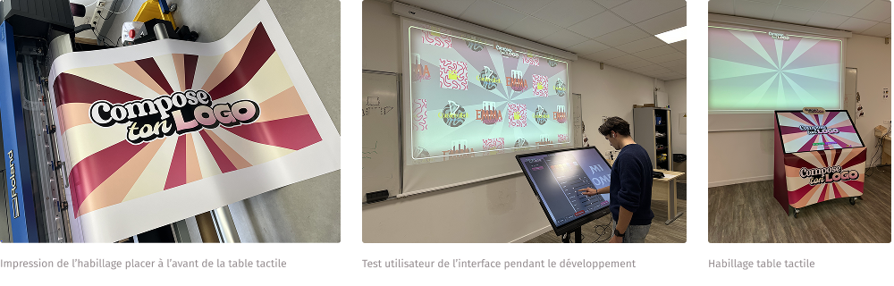

CONTEXTE
À l’occasion de la journée portes ouvertes de l’IUT de Lannion, des dispositifs interactifs sont mis en place pour permettre une démonstration de travaux étudiants aux visiteurs. Le but est de créer une atmosphère immersive de la formation MMI afin de mettre en avant le talent des étudiants et d’engager les futurs étudiants.
Ce projet a été réalisé en binôme avec Vince LINISE.
OUTILS UTILISÉS
Figma
Visuels, interfaces
Illustrator
Visuels pour le print

étapes
Planification : Analyse de l'existant

Lors de la journée du Crime et de la Science à Pleumeur-Bodou, des
étudiants en 3e année de BUT MMI
ont conçu un dispositif interactif.
À l’aide de la table tactile, ils ont développé un éditeur de
portrait-robot afin d’identifier le
coupable des crimes commis sur les vidéos à disposition.
En m’inspirant de l’éditeur de personnage, j’ai pensé à Compose ton
Logo.
Un outil de création graphique simplifié, pour s’essayer à un des
domaines de la formation MMI pour
des futures étudiants.
Grâce à une interface intuitive, l’utilisateur pourra
créer et prévisualiser une composition graphique
qu’il peut ensuite conserver et envoyer sur une
fresque composée de l’ensemble des logos créés par
les autres visiteurs.
Exploration : Recherches UX


Idéation : Création d'un univers graphique

Génération : Conception de l'interface


Pour l’interface, nous avons travaillé sur Figma pour la conception de la maquette du dispositif. Ainsi, nous avons réfléchi aux fonctionnalités et au parcours utilisateur.
Évaluation : Questionnaire et grille

LE PROJET EN IMAGES

CE QUE JE RETIENS
Compose ton logo est certainement le projet dont je suis le plus fière. Grâce à la complémentarité de Vince et moi, nous avons réussi à créer une idée abstraite en une expérience immersive, ludique et attractive.
Lors de ce projet, j’ai renforcé mes compétences en design graphique et j’ai développé des compétences en gestion de projet pour être organisée et suivre un flux dans la création du dispositif.
J’ai également acquis des connaissances plus approfondies sur des logiciels de création graphique tels que Figma et Illustrator. En effet, j’ai créé des maquettes, des composants et des visuels pour le print. Enfin, j’ai appris à utiliser des outils pour mettre à bien notre projet comme la machine découpe laser et l’imprimante du MakerSpace pour créer les bâches et la structure 3D en bois.